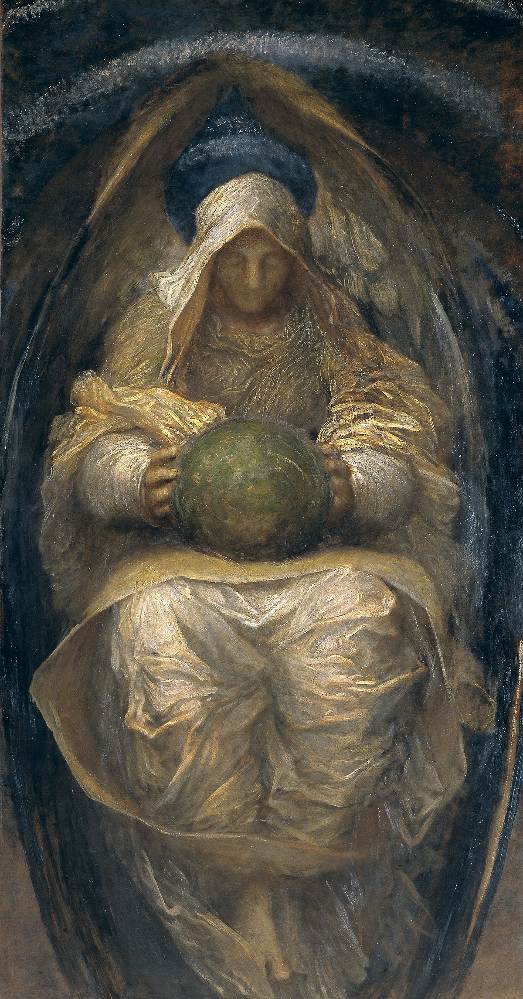
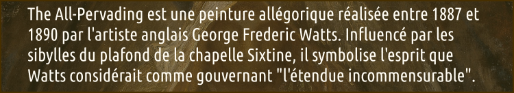

C
hathédrale
O
nirique
Artiste
Oeuvre
Billetterie
Contact
Arnold Bocklin
George Frederic watts
Gustav Klimt
Mikhail Vroubel
Adele Blosh Bauer
Bogatyr
Demon (sitting)
Hope
Ile de la mort
Self portait with the death
The all Pervading
The kiss
The All Pervading

Information
